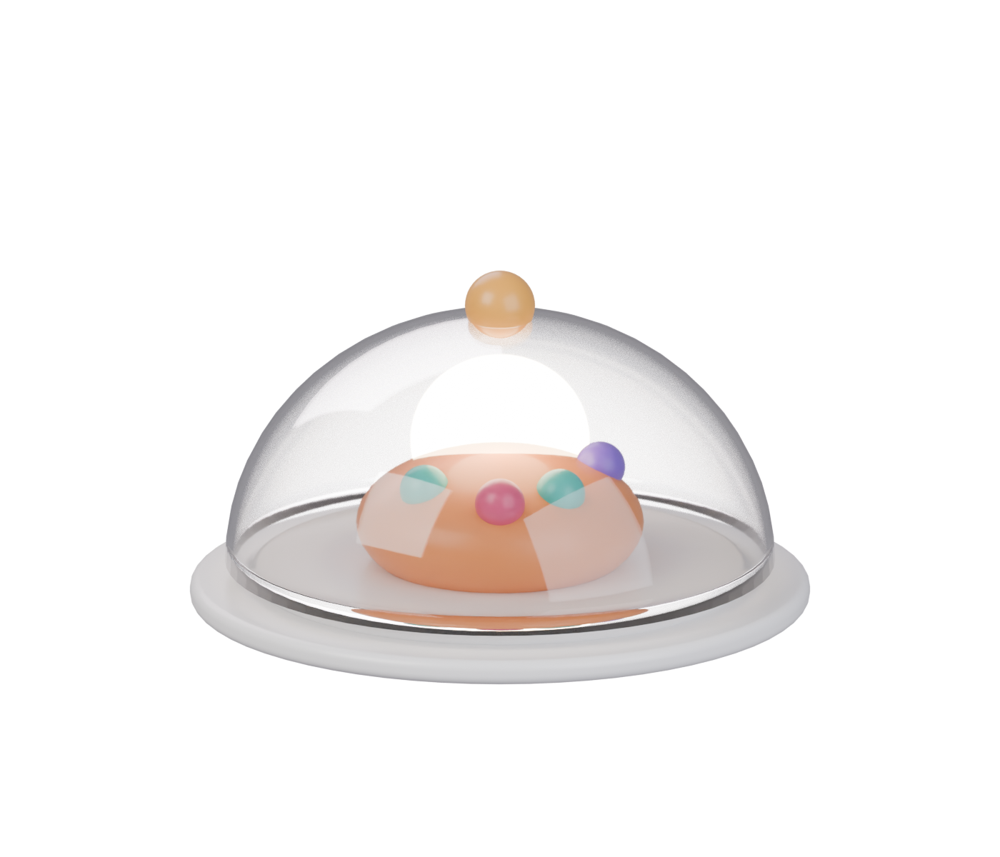
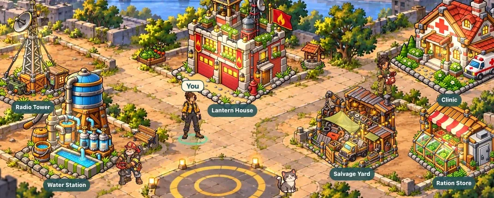

Order №01 · Served
Vigilante
Make showing up mean something.
Choose a GitHub repository and a daily commitment. Vigilante verifies your real pushes — and every one rebuilds a little more of a town that’s waiting for you.

Served hot
What’s under the lidThe town you rebuild
On the plate.
01Pick your projectOne repository. One clear daily commitment.
02Do the real workQualifying pushes are your proof. No source code is read.
03Watch the town come backStreaks and recovery, never wiped by one bad day.